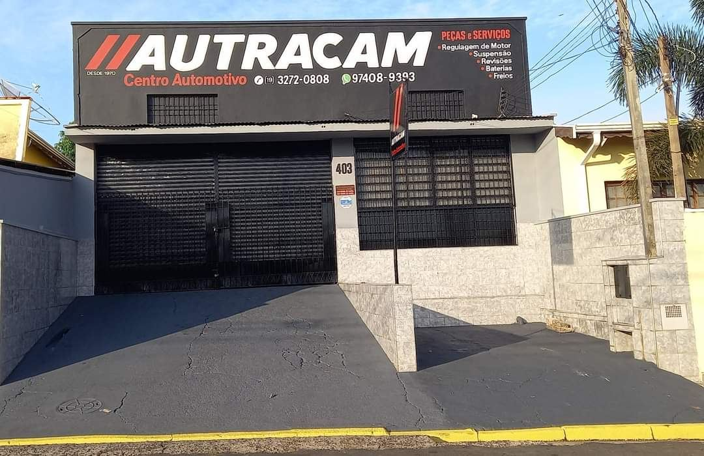
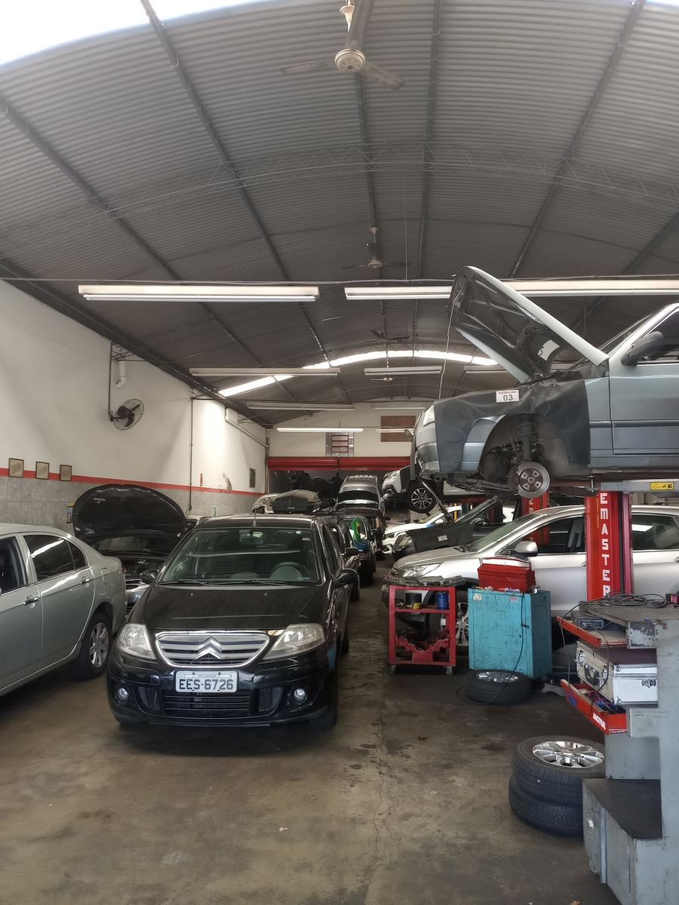
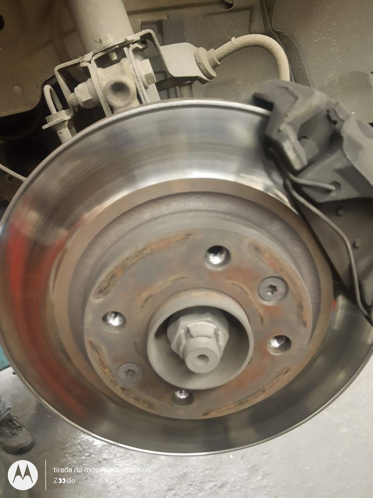

Desde 1970 · mesmo endereço
A oficina de confiança de três gerações.
Mecânica geral, freios, suspensão, revisão e bateria no Parque Industrial. Oficina limpa, equipe uniformizada, capa no banco e o carro testado na rua antes de voltar para você.
55+anos de oficina
4,8 ★187 avaliações no Google

Serviços
O que a gente resolve
Mecânica geralDiagnóstico e reparo de motor, câmbio e arrefecimento.
FreiosPastilhas, discos, lonas e fluido.
SuspensãoAmortecedores, bandejas, braços e bieletas.
Revisão e óleoTroca de óleo, filtros e revisão completa.
Regulagem de motorMotor falhando ou gastando demais.
BateriasTroca de bateria com marca de linha, como a Moura.
AutoelétricaPartida, carga e parte elétrica.
Montagem de pneusTraga os seus ou consulte.


O jeito Autracam
Do jeito que você queria que todo mecânico fosse
- Explica tudo com clarezaA equipe orienta e mostra o que o carro precisa antes do reparo.
- Oficina limpa e organizadaMecânicos uniformizados e capa protetora no banco.
- Teste depois do serviçoO carro roda na rua antes da entrega.
- Preço justo"Preço", "confiança" e "honestos" são as palavras que mais aparecem nas avaliações.
- E o cafezinhoQuem espera elogia o cafezinho da recepção.
Agendamento
Marque o seu horário
Preencha e a mensagem vai pronta para o WhatsApp da oficina. Eles confirmam o dia.
4,8 · 187 avaliações no Google
Quem leva o carro, volta
A oficina é impecavelmente limpa e em ordem e os mecânicos sempre estão uniformizados. Até para sentar no banco do seu carro, eles colocam uma capa protetora.Ana · Google
A equipe foi muito atenciosa, explicou tudo com clareza e realizou o reparo do carro com rapidez e honestidade.Jé · Google
Preço justo para os reparos e consertos no carro.Resumo das avaliações · Google
Onde fica
Parque Industrial, desde 1970
| Segunda a sexta | 7h30–11h30 13h–18h |
| Sábado e domingo | Fechado |
R. Ana Jacinta de Andrade Couto, 403 · Campinas (SP)
Fixo (19) 3272-0808 · WhatsApp (19) 97408-9393